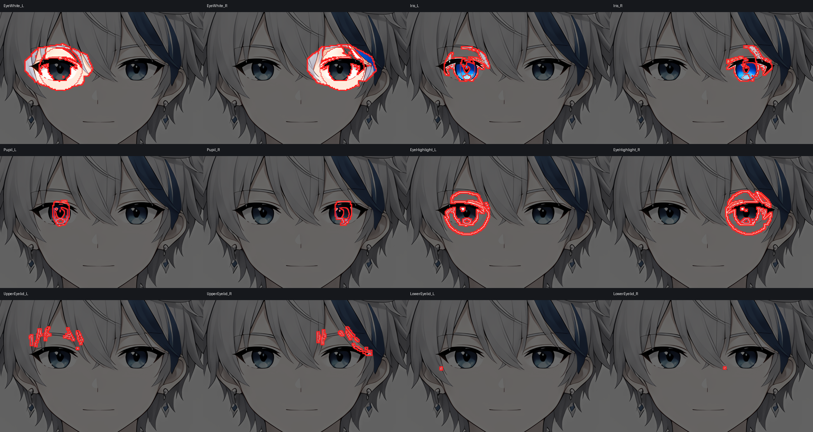

Selected Project / 01
动漫眼部区域识别与可视化

01 / Overview
项目概览
该项目围绕动漫人物的眼部结构进行细粒度区域识别与可视化，将眼白、虹膜、瞳孔、高光以及上下眼睑等局部结构分别呈现。通过并列展示左右眼及不同语义区域，可以直观观察识别边界、位置关系与结果差异，为后续分析和模型迭代提供清晰依据。
识别区域
02 / Regions01Eye White / 眼白
02Iris / 虹膜
03Pupil / 瞳孔
04Eye Highlight / 眼部高光
05Upper Eyelid / 上眼睑
06Lower Eyelid / 下眼睑